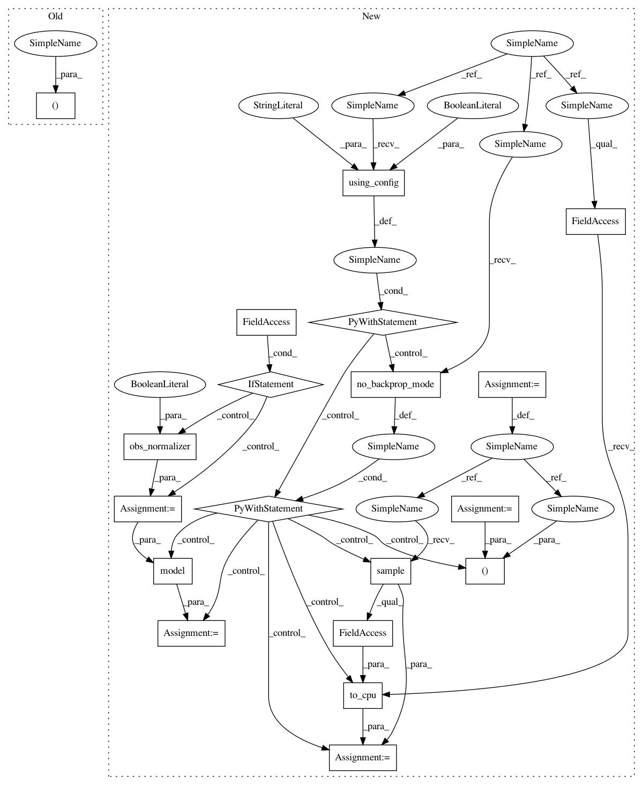

67d13b4ba91b23ad29f660aae68a01ddbd809530,chainerrl/agents/ppo.py,PPO,act_and_train,#PPO#Any#Any#,407
Before Change
b_state = self.batch_states([obs], xp, self.phi)
self.model.obs_filter.experience(b_state)
action, v = self._act(obs)
// Update stats
self.average_v += (
After Change
xp = self.xp
b_state = self.batch_states([obs], xp, self.phi)
if self.obs_normalizer:
b_state = self.obs_normalizer(b_state, update=False)
// action_distrib will be recomputed when computing gradients
with chainer.using_config("train", False), chainer.no_backprop_mode():
action_distrib, value = self.model(b_state)
action = chainer.cuda.to_cpu(action_distrib.sample().data)[0]
self.entropy_record.append(float(action_distrib.entropy.data))
self.value_record.append(float(value.data))
if self.last_state is not None:
self.last_episode.append({
"state": self.last_state,
"action": self.last_action,
In pattern: SUPERPATTERN
Frequency: 3
Non-data size: 19
Instances
Project Name: chainer/chainerrl
Commit Name: 67d13b4ba91b23ad29f660aae68a01ddbd809530
Time: 2018-10-16
Author: muupan@gmail.com
File Name: chainerrl/agents/ppo.py
Class Name: PPO
Method Name: act_and_train
Project Name: chainer/chainerrl
Commit Name: 67d13b4ba91b23ad29f660aae68a01ddbd809530
Time: 2018-10-16
Author: muupan@gmail.com
File Name: chainerrl/agents/ppo.py
Class Name: PPO
Method Name: batch_act
Project Name: chainer/chainerrl
Commit Name: 67d13b4ba91b23ad29f660aae68a01ddbd809530
Time: 2018-10-16
Author: muupan@gmail.com
File Name: chainerrl/agents/ppo.py
Class Name: PPO
Method Name: act